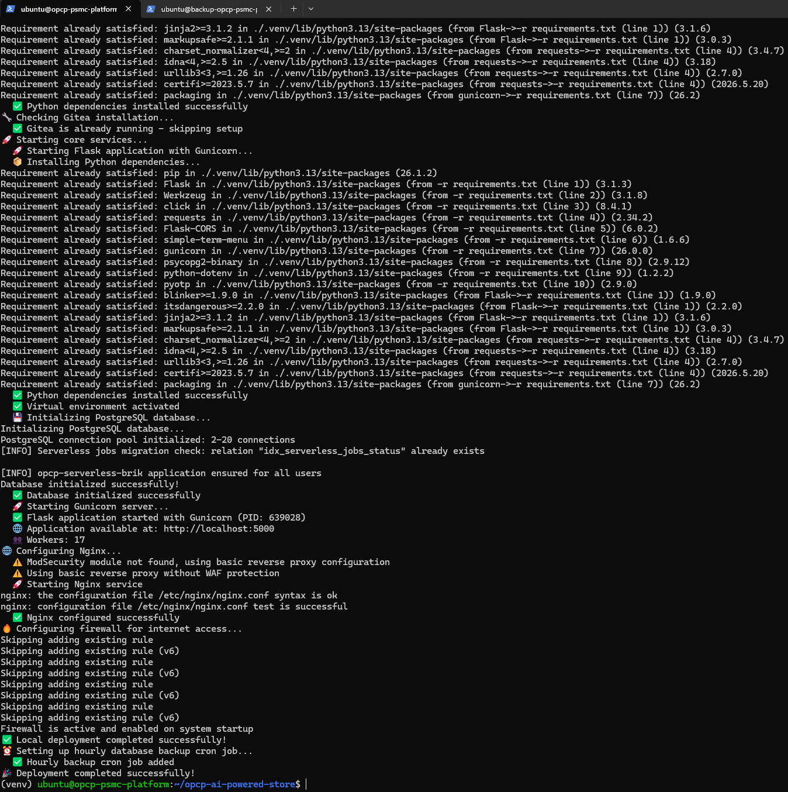

Installation on Bare-Metal Ubuntu
Learn how to deploy the AI-Powered-Store platform on a fresh bare-metal Ubuntu server (22.04 or 24.04 LTS). This guide covers the entire installation process from system preparation to final deployment.
Prerequisites
- A clean Ubuntu 22.04 or 24.04 LTS installation
- Root or sudo access
- At least 4 GB RAM and 20 GB disk space
- Internet connectivity for package downloads
- An NVIDIA-compatible GPU (optional, for MIG support)
Step 1: Install System Dependencies
Start by updating packages and installing required dependencies:
sudo apt update
sudo apt --fix-broken install -y
sudo apt install -y python3 python3-pip python3-venv net-tools unzipStep 2: Install CLI Tools
Install the command-line tools needed for platform management:
Amazon Kiro CLI
curl -fsSL https://cli.kiro.dev/install | bashOVH CLI (shai)
curl -fsSL https://raw.githubusercontent.com/ovh/shai/main/install.sh | sh
echo 'export PATH="~/.local/bin:$PATH"' >> ~/.bashrcAWS CLI
curl -s "https://awscli.amazonaws.com/awscli-exe-linux-x86_64.zip" -o "awscliv2.zip"
unzip -q awscliv2.zip
sudo ./aws/install
rm -rf aws awscliv2.zipTerraform
curl -s "https://releases.hashicorp.com/terraform/1.14.5/terraform_1.14.5_linux_amd64.zip" -o "terraform.zip"
unzip -q terraform.zip
sudo mv terraform /usr/local/bin/
rm -f terraform.zipStep 3: Network Configuration (Netplan)
The script automatically configures network interface priorities to ensure the public interface is preferred for default routing:
- Public interface: route metric
50(high priority) - Private interface: route metric
200(low priority)
Interface detection is automatic, analyzing IP addresses (private ranges: 10.x, 172.16-31.x, 192.168.x).
Step 4: Install Docker
Docker is installed via the official script, with docker-compose as a complement:
curl -fsSL https://get.docker.com -o get-docker.sh
sudo sh get-docker.sh
sudo usermod -aG docker $USER
sudo curl -sL "https://github.com/docker/compose/releases/latest/download/docker-compose-$(uname -s)-$(uname -m)" -o /usr/local/bin/docker-compose
sudo chmod +x /usr/local/bin/docker-compose
rm -f get-docker.shdocker group membership to take effect.
Step 5: Install NVIDIA Drivers and GPU Support (Optional)
If your server has a compatible NVIDIA GPU:
# Install NVIDIA drivers
sudo apt install -y nvidia-driver-550 nvidia-utils-550
# Enable MIG mode (Multi-Instance GPU)
sudo nvidia-smi -mig 1
# Install NVIDIA Container Toolkit
sudo apt install -y nvidia-container-toolkit
# Verify Docker GPU access
docker run --rm --gpus '"device=0"' nvidia/cuda:12.3.0-base-ubuntu22.04 nvidia-smiStep 6: Configure AWS (OVH S3 Storage)
Configure AWS credentials for S3 synchronization with OVH Object Storage:
mkdir -p ~/.aws
# File ~/.aws/config
cat > ~/.aws/config <<EOF
[profile OVH-SWAUTOMORPH]
region = gra
output = json
EOF
# File ~/.aws/credentials
cat > ~/.aws/credentials <<EOF
[OVH-SWAUTOMORPH]
aws_access_key_id = YOUR_ACCESS_KEY
aws_secret_access_key = YOUR_SECRET_KEY
endpoint_url = https://s3.gra.io.cloud.ovh.net/
signature_version = s3v4
EOF
# Environment variables
export AWS_DEFAULT_PROFILE=OVH-SWAUTOMORPH
export AWS_ENDPOINT_URL_S3=https://s3.gra.io.cloud.ovh.net/Step 7: Clone the Repository
Clone the main repository with its submodules:
git clone https://github.com/Sam9682/opcp-ai-powered-store.git
cd opcp-ai-powered-store
git submodule update --init --recursiveStep 8: Set Up the Python Environment
Create a virtual environment and install dependencies:
python3 -m venv .venv
source .venv/bin/activate
pip install -r requirements.txtStep 9: Final Configuration
Prepare the deployment directory structure:
mkdir -p logs
chmod +x setup_modsecurity_config.sh
cd ~
mkdir -p deployments/adminPost-Installation Checklist
- Modify
./conf/deploy.iniwith your platform settings, especiallyPLTF_NAMEandDOMAINvalues - Add the SSL certificate to
~/opcp-ai-powered-store/ssl/fullchain_domain.crtfor nginx HTTPS - Add the SSL private key to
~/opcp-ai-powered-store/ssl/privateKey_domain.keyfor nginx HTTPS - Enter
aws_access_key_idandaws_secret_access_keyin~/.aws/credentialsfor S3 synchronization
Automated Script

All these steps can be executed automatically via the init_pltf.sh script:
chmod +x init_pltf.sh
./init_pltf.shExercises
This lesson includes hands-on lab exercises. Complete each step and validate your progress.